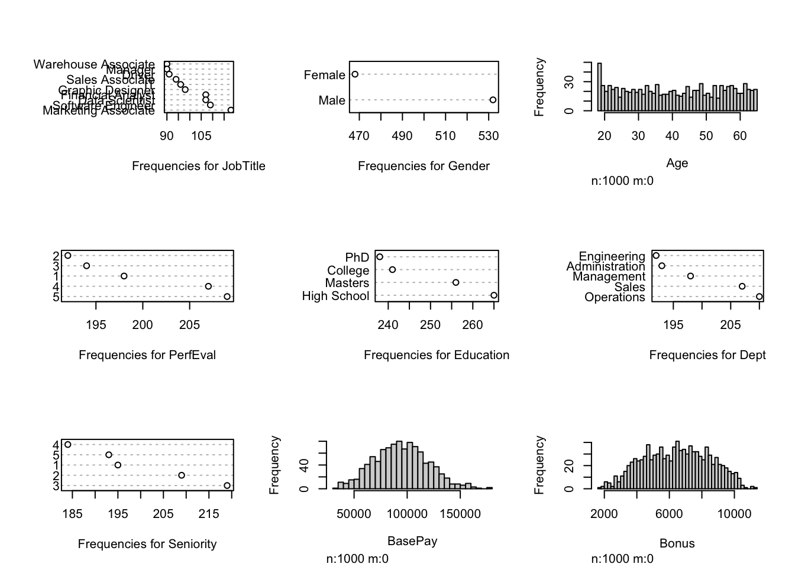
Missing Data and Imputation
Introduction
Data is becoming more integrated into our society and decision-making process. The magnitude of these decisions are hard to measure because data is used in many aspects of everyday life such as business, politics, social, etc. Real world data is usually incomplete with missing data.
Problem Statement
Original solutions such as listwise deletion or univariate imputation of the mean create bais and inaccurate results. Multiple imputation for missing data has emerged as the primary solution however, many considerations are needed for analysis. Our focus will dive into the types of missing data, introduce some methods to address missing data, and analysis of these methods.
Types of Missing Data
MCAR (Missing Completely at Random) is the data missing where data points are not related to each other and probability of missing data is equal for every data point.
MAR (Missing at Random) is the likelihood of a value to be missing depends on other observed variables.
MNAR (Missing Not at Random) is unequal and unknown probability to be missing for a dataset.
Solutions for Missing Data Types
MCAR (Missing Completely at Random) is unbiased missing data and allows methods such as complete case analysis, single, and multiple imputation for valid analysis.
MAR (Missing at Random) is missing data values that have dependency on other observed variables. For this data type we can use multiple imputation.
MNAR (Missing Not at Random) data is missing and we are unaware of this missing data type. For this data type, sensitivity analysis is preferred.
Terminology
Imputation Process of replacing a missing value with another value.
Complete Cases (Listwise Deletion) Only use complete observations in analysis. If an observation is missing data, delete the observation.
Univariate Imputation is single variable imputation. Depending on variable type mean, median, frequency imputations are used.
Ampute the ampute() function generates multivariate missing data under a MCAR, MAR, or MNAR missing data mechanism.
Dataset
Found on Kaggle and produced by data from Glassdoor.
Focuses on compensation data between men and women.
Was constructed in efforts to aid testing the pay gap between men and women.
Has 9 variables with 1000 observations.
- Variables: Job Title, Gender, Age, Performance Evaluation, Education, Department, Seniority, Base Pay, Bonus
Visualization of Dataset
Generating Missing Data
In order to generate missing variables for each of the types, we used the ampute function from the mice package.
For each missing type, 20% of the data set was turned into NA values with respect to it’s type.
Visualization of Missing Data (MCAR)
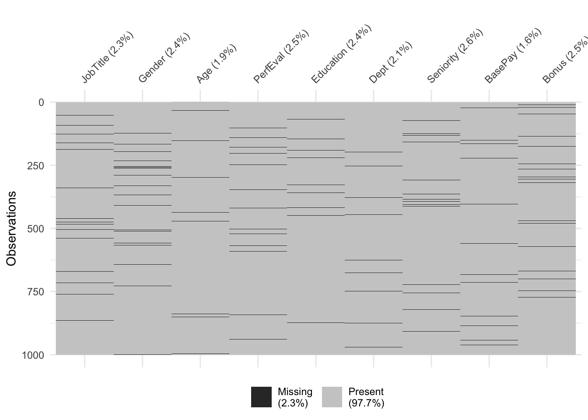
Visualization of Missing Data (MAR)
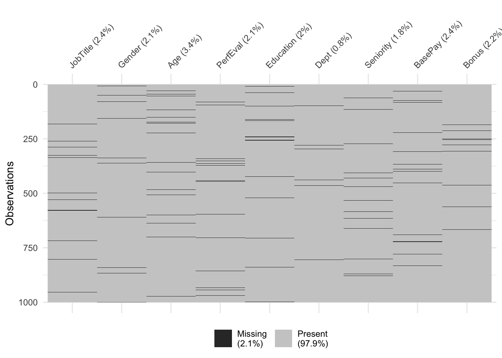
Visualization of Missing Data (MNAR)
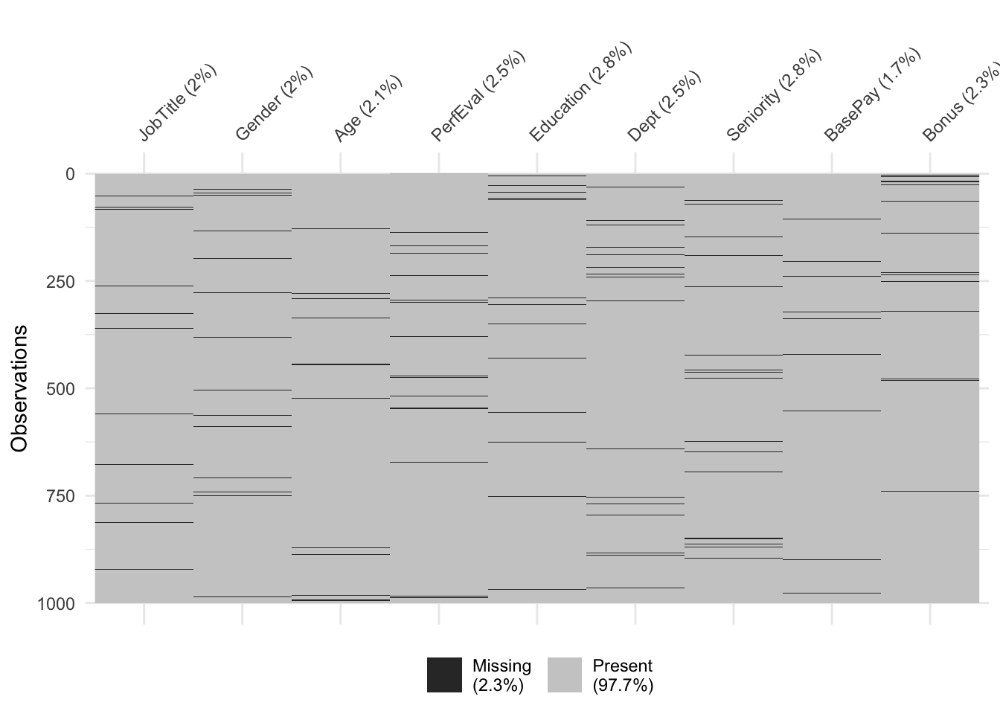
Methods
Single Imputation replacing a missing value with a single value usually in the form of a single variables mean, median, for frequency.
kNN Imputation makes predictions about missing values by finding the K’s closest neighbors and impute the value based on the neighborhood.
Random Forest Imputation an iterative imputation method based on a random forest allows quality and flexibility utilizing built-in out-of-bag error estimates.
MICE Imputation involves filling the missing values multiple times until a certain threshold is met.
Percent Error Calculation
- The calculation being used to produce Error is:
\(Error = \frac{|Theoretical-Experimental|}{Experimental}*100\)
Single Imputation
Overview
Replaces missing values with mean, median or most frequent value within the variable depending on the type
i) Continuous Variables: Mean, Median ii) Categorical Variables: Most Frequent
Outcome
Very easy and fast to compute
Does not factor correlation between variables and can introduce bias to the data set.
Visualization of Single Imputation Error
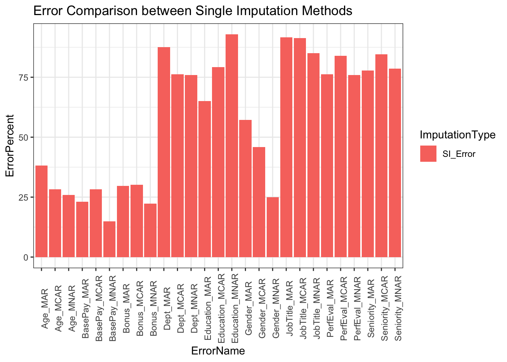
kNN Imputation
Overview
Algorithm creates a basic mean impute to construct a KDTree, which finds the nearest neighbor and then finds the average of KNN’s
Find the kth closest neighbor and imputes based on that value.
Outcome
Has an advantage of being more accurate.
Computationally expensive and is very sensitive to outliers.
Visualization kNN Imputation Error
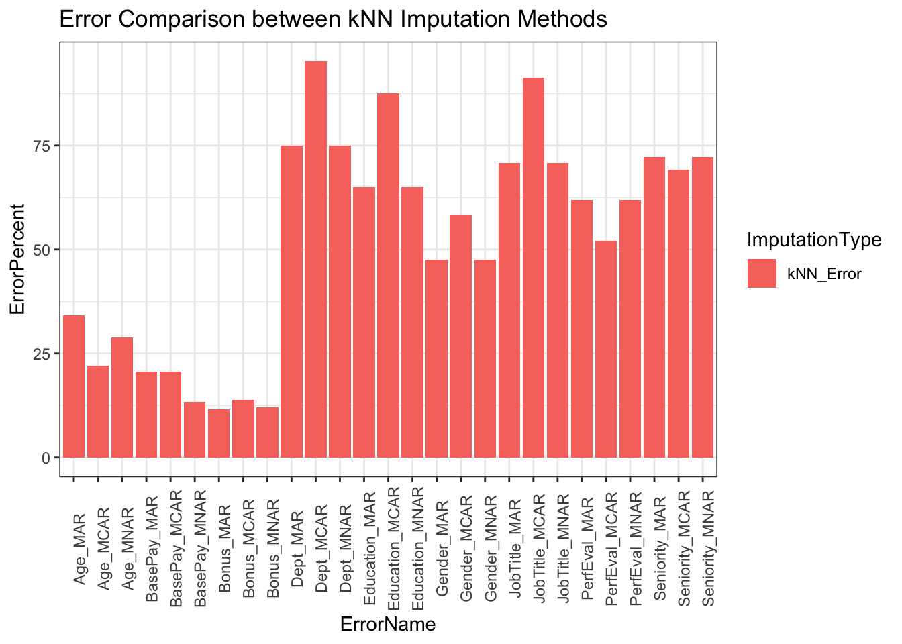
Random Forest Imputation
Overview
An iterative imputation method based on random forest.
Allows quality and flexibility utilizing built-in out-of-bag error estimates
Can be used on mixed types of data with ability to account for high-dimensions and different types of variables simultaneously.
Outcome
Flexible and accounts for mixed variables.
Computationally expensive, especially with sufficiently small data sets which may be unnecessary.
Visualization Random Forest Imputation Error
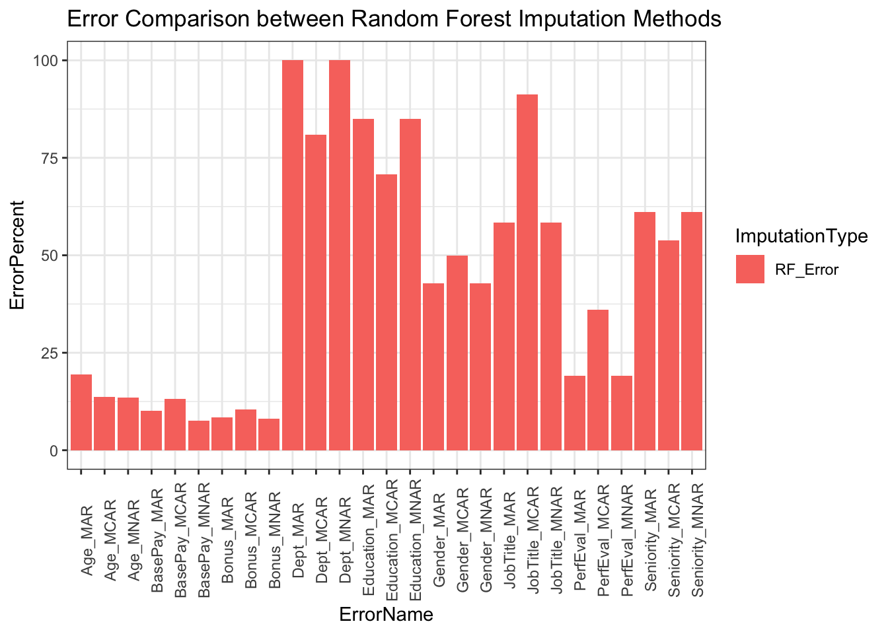
MICE Imputation
Overview
Fills values multiple times until a threshold is met.
Assumes missing values are MAR (Missing at Random)
Uses different models depending on type of variable. Ex:
i) Linear Regression for continuous variables. ii) Logistic Regression for categorical variables.
Outcome
Unbiased estimates which provides more validity.
Does not have the same theoretical justification as other techniques.
Could result in bias if missing values are not MAR (Missing at Random).
Visualization Mice Imputation Error
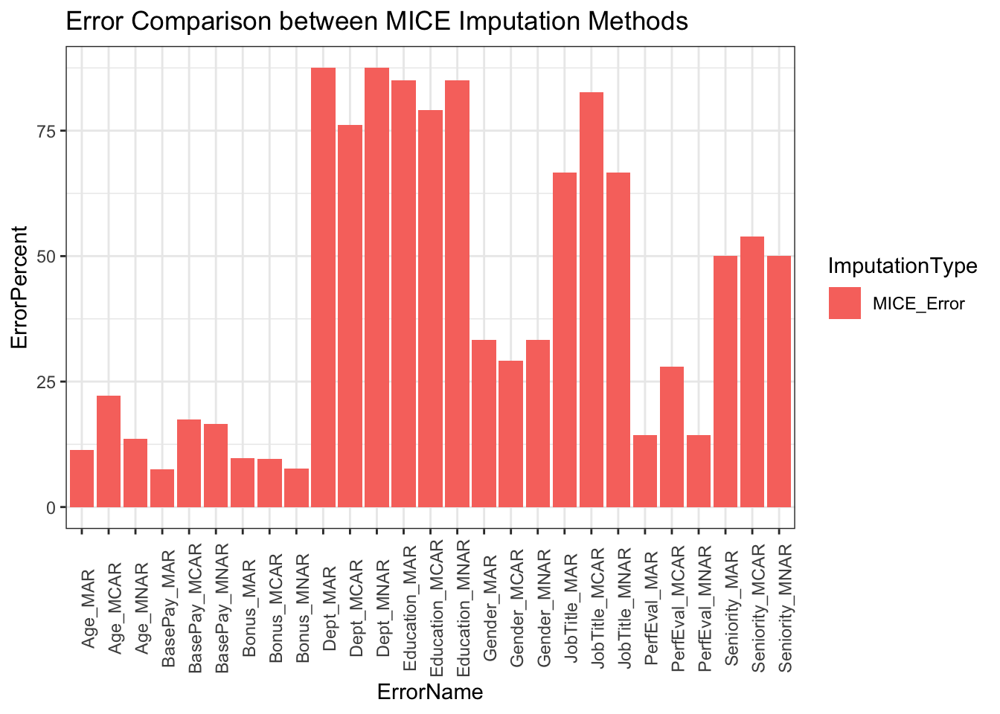
Results
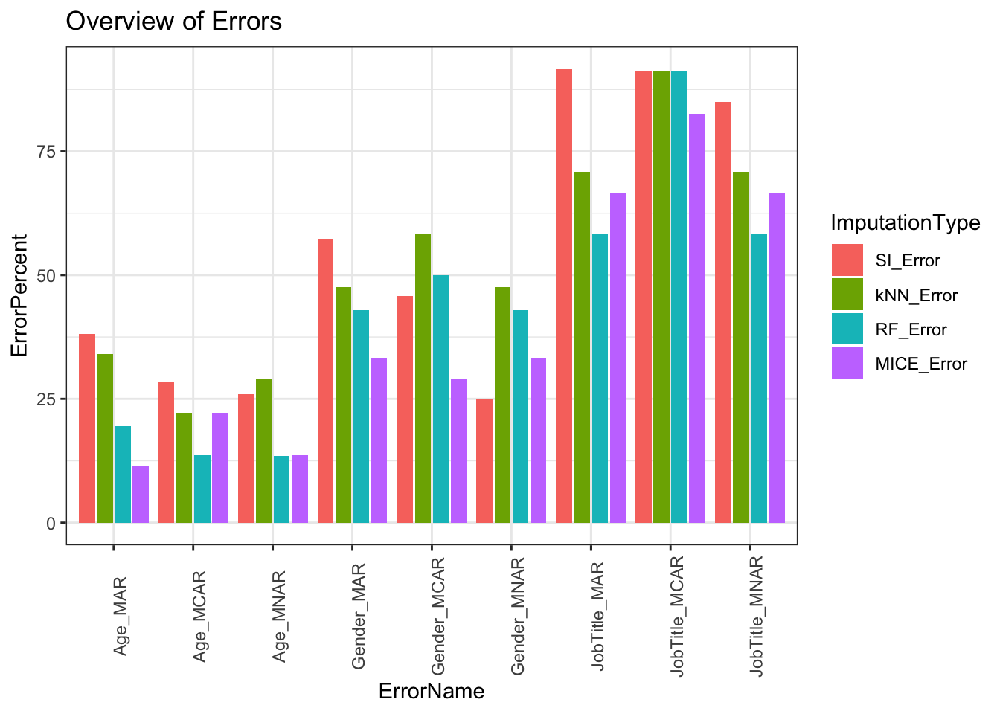

Overview Errors
Continuous variables have less overall error than categorical variables.
Single Imputation is the worst performing method of imputation.
MICE is the best performing method of imputation when compared to kNN and RF imputation in our analysis.
kNN and RF had similar performance during evaluation however, RF had less error across the various types of variables.
Conclusions
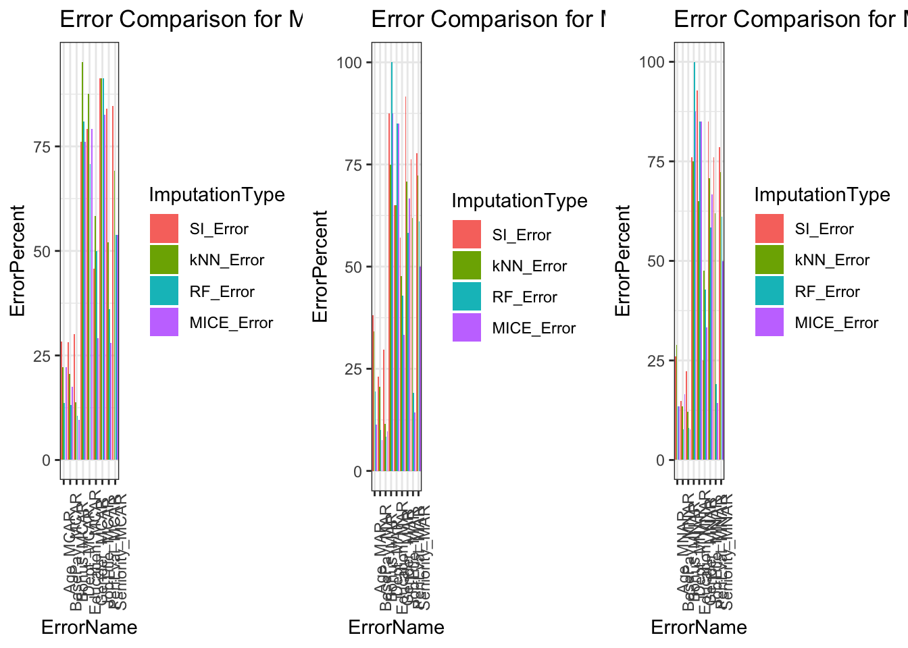
Error Comparison for Types of Missing Data
- The expectation was for the MAR type of missing data to be the best performer in terms of least amount of error percent however, because of the smaller size of our data set, it is not as effective as it would be for a larger data set.
- Given a larger data set the differences between our missing data types is more easily compared. The methods of imputation are designed for MAR type of missing data.
- MCAR missing type of data is somewhat unrealistic because you would be omitting variables without relationships to the result.
Conclusions
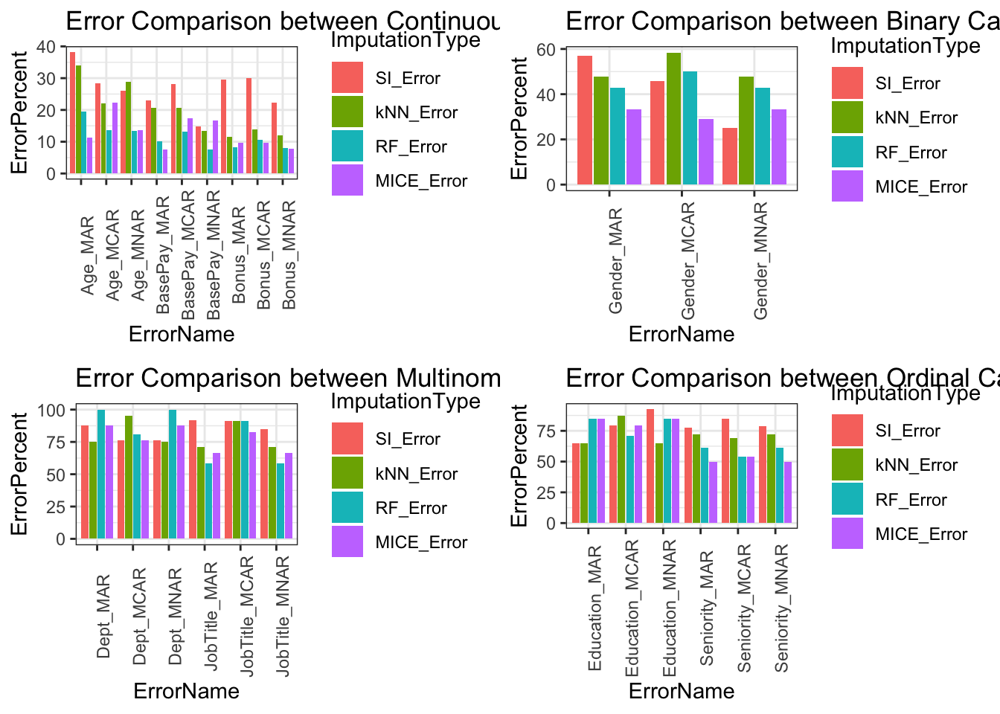
Error Comparison for Types of Variables
- Comparisons above showcase the imputation types with respect to variable types.
- Upper limit of errors for continuous variables is 40%, binary categorical variables is 60%, multinomial categorical variables is 100%, and ordinal categorical variables is 95%.
- Categorical variables error is higher because variability is based on frequency of occurrence in our data.
- Within larger datasets this error will drop because each miss classification has less impact on total error assuming the missing data type is MAR.
References
[1] Papageorgiou, G., Grant, S. W., Takkenberg, J. J. M., & Mokhles, M. M. (2018). Statistical primer: How to deal with missing data in scientific research?. Interactive CardioVascular And Thoracic Surgery, 27(2), 153--158. https://doi.org/10.1093/icvts/ivy102
[2] Azur, M. J., Stuart, E. A., Frangakis, C., & Leaf, P. J. (2011). Multiple imputation by chained equations: what is it and how does it work?. International journal of methods in psychiatric research, 20(1), 40--49. https://doi.org/10.1002/mpr.329
[3] Badr, W. (2019). Retrieved from 6 Different Ways to Compensate for Missing Values In a Dataset (Data Imputation with examples). Towards Data Science. https://towardsdatascience.com/6-different-ways-to-compensate-for-missing-values-data-imputation-with-examples-6022d9ca0779
[4] Obadia, Y. (2017). The use of KNN for missing values. Towards Data Science. https://towardsdatascience.com/the-use-of-knn-for-missing-values-cf33d935c637
[5] Zhang, Z. (2016). Missing data imputation: Focusing on single imputation. Annals of translational medicine, 4(1). https://www.ncbi.nlm.nih.gov/pmc/articles/PMC4716933/